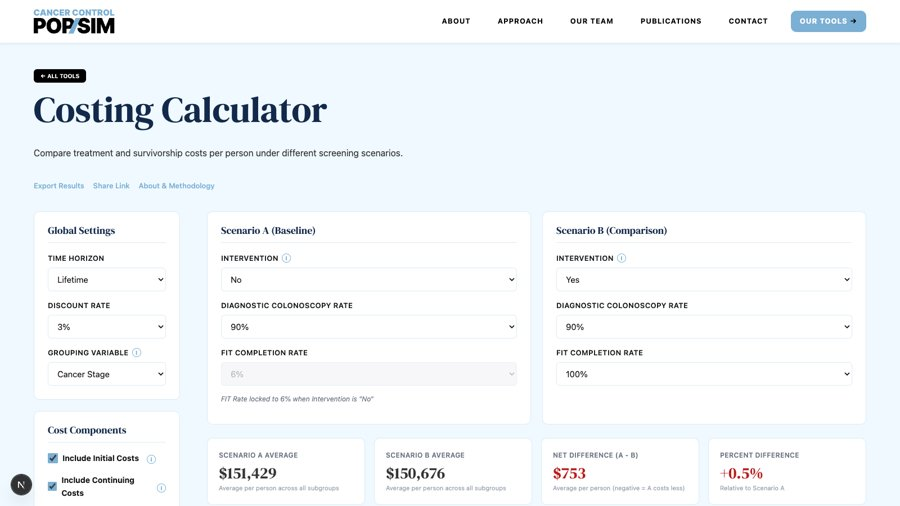
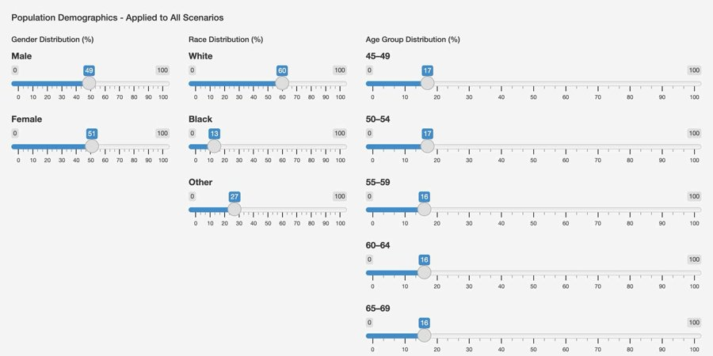
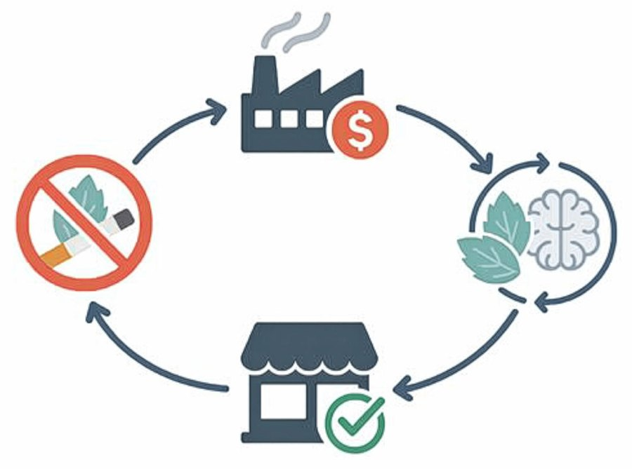
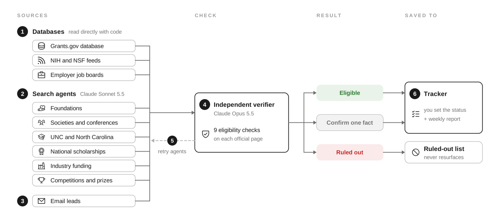

Clayton Ulm, MSPH
Doctoral Student, Health Behavior, UNC Gillings School of Global Public Health
Data Analyst, Stanford Food Policy Lab, Stanford School of Medicine
I am a systems science researcher studying health-producing systems.
I am interested in how health-producing systems, such as pharmaceutical companies, influence population health behavior and human biological aging. I work comfortably across disciplinary cultures and institutions. I am a graduate research assistant in the Department of Health Behavior, a data analyst at the Stanford Food Policy Lab at Stanford School of Medicine, and now a biosocial trainee at the Carolina Population Center, Biosocial Training Program.
- 1 Health-producing systems tobacco and food industries
- 2 Health behavior sugary drinks, fast food, alcohol, nicotine, cannabis
- 3 Organ-specific aging e.g., heart and liver
- 4 Brain health e.g., cognition
BSteps 2, 3, and 4 each generate public support that drives regulation
My research as a causal loop diagram.
Research
Organ-specific aging and brain health
2→3→4 Dissertation, Carolina Population Center
My dissertation is a pivot from my previous experience to study the aging of biological systems that precede the development of Alzheimer's disease and dementia. The overall goal of this work is to inform clinical prevention and drug-development research focused on preventing Alzheimer's early, decades before it is typically diagnosed.
Tobacco policy and systems science
1→2 UNC Tobacco Center of Regulatory Science
In my work on tobacco, I identified the for-profit feedback loop that drives tobacco product development and marketing and, in turn, demand for these products. In addition, because these products harm health, I showed how this harm generates a public-support-driven counteracting loop that drives tobacco control. I had the opportunity to present this work on a panel at the 2025 National Conference on Tobacco or Health.
Food policy and social media
1→2 Stanford Food Policy Lab
As a data analyst at the Stanford School of Medicine, I have developed my training in clinical trials, mixed-effects modeling, and difference-in-differences modeling. I do mixed-effect analyses and data visualization for research on food policy and social media warning labels.
Publications
-
2026Ulm C, Golden SD, Hill F, Wiesen CA, Mills SDmedRxiv, from my master's thesis
-
2026Grummon AH, Ulm C, Zeitlin AB, Hall MG, Falbe J, Kline NA, Robinson TNJAMA Health Forum
I wrote the code for this clinical trial on social media warning labels and perceived message effectiveness among teens and young adults.
-
2026Grummon AH, O'Sullivan K, Zeitlin AB, Taillie LS, Lee CJY, Walker AJ, Tiefenbeck V, Fleisch E, Ulm C, Robinson TNPLOS Medicine
I wrote code to analyze this food swaps trial aimed at improving the healthfulness and carbon footprint of online grocery purchases.
-
2026Ulm C, Hill F, Mills SD, Chelius C, Hecht EMChild and Adolescent Psychiatry and Mental Health
I led this umbrella review, which synthesized 15 pooled estimates covering more than 2.5 million children and adolescents.
-
2026Hill F, Hassmiller Lich K, Wilson M, Ulm C, Golden SD, Ribisl KM, Baldwin-SoRelle C, Mills SDNicotine & Tobacco Research
I ran a random-effects meta-analysis for this systematic review of flavored cigar bans that pooled data on participants' hypothesized behavior under such a ban.
-
2026Langford JS, Hébert ET, Jones DR, Tonkin SS, Barker BA, Ulm C, Shi D, Becerra JA, Businelle MSAssessment
-
2024Ulm C, Chen S, Fleshman B, Benson L, Kendzor DE, Frank-Pearce S, Neil JM, Vidrine D, De La Torre I, Businelle MSJMIR Formative Research
Using data from a randomized controlled trial of a smartphone-based cessation intervention, I led an analysis identifying factors associated with survey and messaging engagement over the study period. I used mixed-effects modeling to show that age, sex, employment, and education significantly relate to how fast someone quits engaging with the cessation intervention.
In the news
Social media health warnings, JAMA Health Forum
- Sep 2026Warning labels could curb young people's social media useStanford Report
- Sep 2026Social media warnings could discourage use among teens, young adultsHealthDay
- Sep 2026Health warnings could reduce youth's hours spent on social mediaEuronews
- Sep 2026Mental health warning labels prompt young people to limit screensNews-Medical
- Sep 2026Social media health warning labels discourage young consumers from wanting to use the platformsEMARKETER
Food swaps trial, PLOS Medicine
- Sep 2026Climate-friendly shopping tips led to more sustainable and healthier purchasesIngredients Network
Talks and posters
- Aug 2025Systems Literature Analysis Engine: automating the connection of scientific evidence to inform causal loop diagramsWork-in-progress presentation, International System Dynamics Conference, Boston, MASlides
- Aug 2025Contextual factors influencing flavored tobacco ban effectiveness: an empirical evaluation of industry tactics and policy enforcementPanel presentation, National Conference on Tobacco or Health, Chicago, ILSlides
- Aug 2025Improving the design and implementation of local and state policies that ban the sale of flavored tobacco productsPoster presentation, National Conference on Tobacco or Health, Chicago, ILPoster
- Mar 2025State-level trends in urban-rural smoking disparities from 2018 to 2022Poster presentation, Society for Research on Nicotine and Tobacco, New Orleans, LA
- Sep 2023The interrelationships of unhealthy food consumption and morbidities in youth: an umbrella reviewPoster presentation, North Carolina Public Health Association Conference, Concord, NCPoster
- May 2023Barriers to survey completion in a cessation app for smokers unmotivated to quit: a qualitative studyPoster presentation, Colloquium on Qualitative Health Sciences Research in Oklahoma, Oklahoma City, OKPoster
- Apr 2023Private religiosity better predicts less hazardous drinking than public religiosityPoster presentation, Society of Behavioral Medicine, Phoenix, AZPoster
- Mar 2023Do smokers initially unmotivated to quit open smartphone messages that promote and support smoking cessation attempts?Poster presentation, Annual Cancer Research Symposium, Oklahoma City, OKPoster
- Apr 2022Statistical numeracy and belief bias: a case of medical decision makingPoster presentation, Psychology Graduate Student Association, Norman, OKPoster
- Mar 2022Relationship between sleep quality and readiness to change weight-related health behaviors in smokers unmotivated to quitPoster presentation, Annual Cancer Research Symposium, Oklahoma City, OKPoster
Tools and code
- ToolColorectal cancer costing calculator (my tool)

Compare treatment and survivorship costs per person under different screening scenarios.Code - ToolColorectal cancer screening calculator

I was part of the team behind this tool. It compares colorectal cancer screening strategies and estimates cancer cases, deaths, and life-years lost. - ToolMenthol cigarette bans (my website)

A publicly available tool that uses causal loop diagrams to represent feedback dynamics between ban implementation, industry substitution, and population cessation behavior. - CodeOpportunity Scout

A weekly system that finds grants, industry funding, scholarships and awards, and jobs a doctoral student is actually eligible for, and keeps them in one tracker.
Experience
- 2026 – nowPre-doctoral Trainee, Biosocial Training ProgramCarolina Population Center, University of North Carolina at Chapel Hill. Mentors: Drs. Sarah Mills and Kenneth Bollen.
- 2025 – nowData Analyst, Stanford Food Policy LabDepartment of Health Policy, School of Medicine, Stanford University. Mixed-effect analyses and data visualization for research on food policy and social media warning labels.
- 2023 – nowGraduate Research Assistant, Department of Health BehaviorGillings School of Global Public Health, University of North Carolina at Chapel Hill. Causal loop diagrams, meta-analyses, and regression analyses on tobacco policy and health behaviors.
- 2022 – 2023Staff Research Assistant, Health Promotion Research CenterStephenson Cancer Center, University of Oklahoma Health Sciences Center. Mixed-effect analyses of predictors of app engagement; participant recruitment and qualitative interviews.
- 2020 – 2022Research Assistant in three labsDecision Analytics Lab; Ethical Choice Education Lab; Day Lab, Department of Psychology, University of Oklahoma. Structural equation modeling on statistical numeracy affecting medical decision-making.
Education
- 2025 – nowPh.D. in Health BehaviorGillings School of Global Public Health, University of North Carolina at Chapel Hill. Advisor: Dr. Sarah Mills.
- 2025MSPH in Health Behavior"State-Level Trends in Urban-Rural Differences in Cigarette Smoking in the United States." University of North Carolina at Chapel Hill.
- 2022B.S. in Psychology, Summa Cum Laude"Statistical numeracy and belief bias: A case of medical decision making." University of Oklahoma.